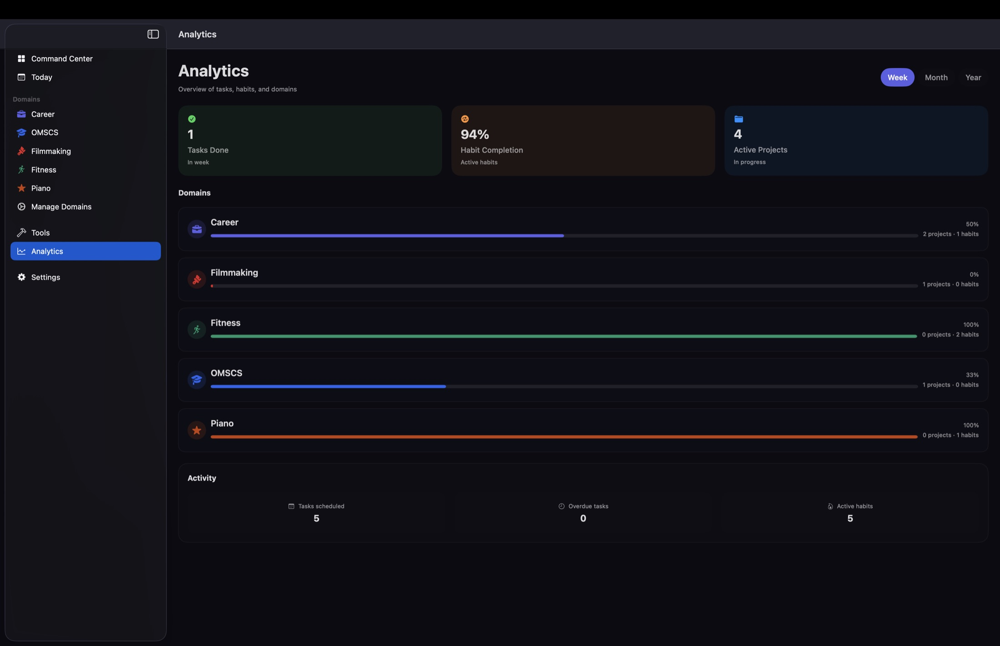

Command Center
Balance the big picture.
Domain charts, progress rings, and focus cues keep your week aligned without extra noise.

Polymath brings your projects, habits, and tasks into one calm dashboard with liquid-glass UI and domain accents. iCloud-only sync, no ads, no trackers.
Designed for multi-hyphenates: manage career, learning, fitness, and creative goals in one system with time blocking, habit streaks, and focused planning.
Built for people who work across different domains and need a single place to track priorities, record progress, and stay productive.
About Polymath
Polymath is a productivity app for iPhone, iPad, Mac, and visionOS that unifies task planning, habit tracking, and project management. Organize life domains, set goals, and keep a steady rhythm with time blocking and focus modes.
Built with SwiftUI and SwiftData, Polymath stays fast and private. Data is stored locally and optionally synced through iCloud using CloudKit, with no ads and no third-party trackers.
Built for multi-hyphenates
From goals to daily execution, Polymath aligns focus, progress, and recovery in one place.
See your balance at a glance with domain charts, progress rings, and daily momentum.
Protect your attention by curating a small set of projects that matter now.
Time-block tasks with drag and drop, context tags, and focus metrics.
Academic, fitness, and creative dashboards tailor metrics to each life domain.
Keep habits visible and rewarding with daily streak cues.
Your data stays on device and in iCloud. No ads, no trackers, no third-party SDKs.
Workflow
A fast, glassy UI tuned for clarity. Everything you need, nothing you don't.
Command Center
Domain charts, progress rings, and focus cues keep your week aligned without extra noise.
Domains
Academic, fitness, and creative modules tailor the data and workflows to each arena.
Today Planner
Drag tasks into the day, tag the context, and keep your focus hours visible.
About the developer
Polymath is a free, privacy-first project built solo. See the support options or read the full story.
Hi, I am Divyansh, 25 years old, based in New Delhi. I am an engineer by profession and work in AI, but my time is split between painting, photography, filmmaking, traveling, game dev, app dev, music, and learning piano.
Juggling so many creative tracks made me want a calmer system to see priorities, protect focus, and stay consistent. That is how the idea for Polymath started.
Polymath stays free by design with no ads, no tracking, and iCloud-only sync. If it helps, a small tip keeps the momentum going.
FAQ
No. Polymath uses SwiftData locally and optionally syncs through your personal iCloud account.
Yes, when iCloud is enabled. Your data stays inside your iCloud, not on our servers.
No. There are no third-party SDKs, ads, or tracking services in Polymath.
Polymath ships for iPhone and iPad with Mac support. visionOS layouts are supported in the current build.
Yes. Email your Apple ID to test@polymaths.life or visit the TestFlight page.
Polymath is for people who juggle multiple domains and want a single system to plan tasks, track habits, and record progress without context switching.
You can clear local data in the app and manage iCloud data through system settings. See the account deletion page for the full steps.
Download Polymath and start building a life you can see, track, and love.